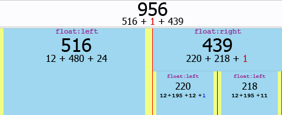
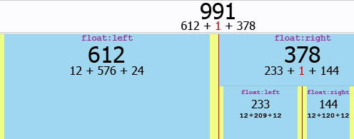

ucwutididthar? I titled this post “Thesis Phi-Column Layout,” instead of “Three-Column Layout?” Ha ha ha! Get it?!
No, of course you don’t. No one does…not even me. But let’s continue anyway.
This post is for anyone who meets the following criteria:
- You use the Thesis WordPress theme.
- You use a 3-column layout.
- You want your page layout to be more aesthetically pleasing, by using column widths that are in the golden ratio.
(I think that means I wrote this for myself.)
In case you’re wondering…yes, I have already formatted this blog to achieve said aesthetic pleasure. You might also be wondering: What is the golden ratio? Well, the quick answer–and the only answer you’ll get from me–is it’s approximately 1.61803399, and a bunch of smart people during the Renaissance believed it was a ratio that made shit look cool. I like my shit to look cool, so I experimented with the Thesis Design Options and made it happen.
The Golden Ratio
There are several different combinations that could work, but the basic goal is to set the column widths such that: #content ÷ φ = #sidebars where φ is the golden ratio ≈ 1.61803399
The Default Thesis Column Layout
I’ve made a diagram that I thought would help explain the differences between the default CSS and my “golden” CSS, but looking at it now…I’m confusing myself. Oh well, I’ll post it anyway. Here’s a diagram of the Thesis default column widths:

This isn’t the actual CSS code I used. It’s only a key for you to reference when you look at the diagram, so you can tell which element is which.
#content_box{width: 956px;}
#content{width: 516px;}
#sidebars{width: 439px;}
#sidebar_1{width: 219px;}
#sidebar_2{width: 218px;}
Note:
#sidebar_1is 220px wide in the diagram, but 219 in the CSS. This is because the diagram has added in the 1px border-right, indicated by the blue line.- The red lines in the diagram represent 1px-wide columns that are not occupied by child elements. The main element,
#content_box, is 1px wider than the sum of its child widths. The first child,#content, is floated to the left of that “extra” pixel, and the second child,#sidebars, is floated to the right of it. The border that appears to occupy the extra pixel is actually a background image of#content_box. - The second red line (far right border) doesn’t have a purpose as far as I can tell. It might be caused by the browser rounding the conversion of pixels to ems, or it might just be a minor bug in the default CSS. With the Thesis CSS styles being dynamically built by WordPress, I’m not about to invest the time to figure out what’s causing that empty pixel. It could also be related to the 11px margin at the far right (instead of 12px like all the other margins).
The Phi-Column Layout
Here’s the diagram of the Thesis phi-column widths:

Again, these widths are only a reference so you can tell which element is which in the diagram
#content_box{width: 991px;}
#content{width: 612px;}
#sidebars{width: 378px;}
#sidebar_1{width: 233px;}
#sidebar_2{width: 144px;}
Follow These Steps
Go to WP Admin → Thesis Options → Design Options → Site Layout → Columns, and enter in these widths:
- Content: 576px
- Column 1: 209px
- Column 2: 120px
Add this CSS code to your custom.css file:
#sidebars{background:url('../custom/images/dash-ddd.gif') 23.3em 0 repeat-y;}
#sidebar_1{border-right:0;}
#sidebar_2{float:right; width:14.4em;}
#sidebar_2 ul.sidebar_list{padding-right:1.2em;}
Create a 1×2 pixel .gif that matches your border color. The first pixel should be your border color and the second pixel should be transparent. If you are using the Thesis default color (#DDD), you can just copy this one (right-click that link and select the “Save link as…” option, or something similar). Save the .gif image to your custom images folder (or use whatever folder you want, but be sure to update the CSS to point to that location).
{kind=link}
That’s it. You’re golden.